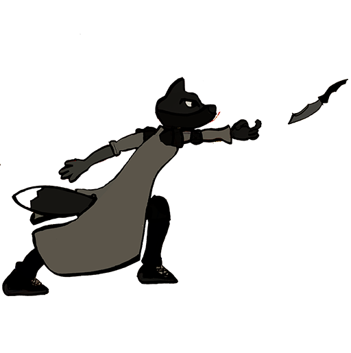
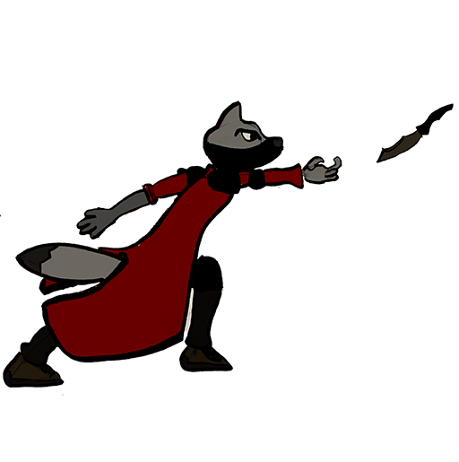

Ilustración Digital y Diseño de Personaje
Descripción
Este proyecto fue realizado en el segundo semestre de la carrera cuando apenas estaba empezando la pandemia por COVID-19. El proyecto constaba de dos partes: El diseño en papel del personaje y la digitalización del mismo. Era necesario que el personaje fuera un animal antropomórfico y hacer variaciones del personaje con distintas paletas de color.Aprendizajes
Aparte de refinar mis habilidades de dibujo adquiridas en mi primer semestre de la carrera, aprendí a utilizar herramientas como Photoshop, Ilustrator y también aprendí como mezclar distintos colores en paletas de colores que tuvieran contraste o armonía según lo que se requiera.Dificultades
La principal dificultad a la que me enfrenté fue el tener que adaptarme a trabajar en un formato completamente online pues la pandemia ocasiono un abrupto cambio en la vida de todos. Siento que el no poder tener una comunicación tan activa con el profesor como la que se tenía al estar en un salón de clases causo problemas y retrasos en el desarrollo del personaje pues no se podía dar un buen feedback a base de fotos.

